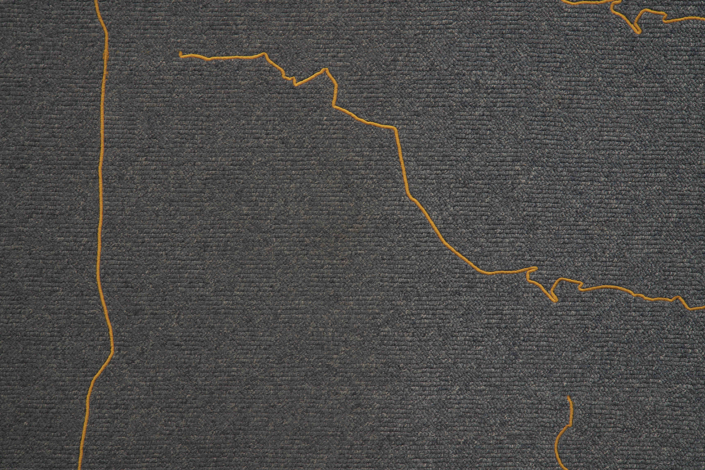
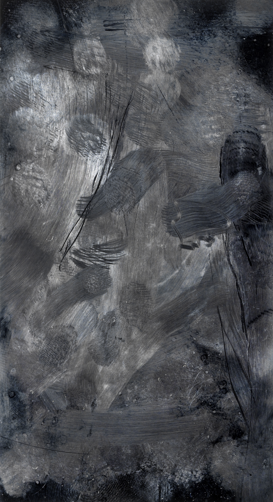

The abundance of cartographic details in Stéphanie Saadé’s The Encounter of the First and Last Particles of Dust suggest a preoccupation with navigation. Measurements and trajectories allude to wayfinding, elements of precision, distances, and routes to chart a course. Journeys of epic and infinitesimal proportions are observed, scales of magnitude inherent in a title that implies both careering aeons of space-time and strange micro-intimacies of dust spanning decades and cloaking forgotten artefacts.
Yet, like shifting and prismatic modes of navigation (a word that means variously a vessel to move with, a web browser as a digital interface that manipulates data, charting a journey by the stars, a Google map, and the delicacies of social mores), this is not solely a spatial enquiry. It is not even immediately apparent what we are traversing, though the invocation of teenage bedrooms, once familiar journeys, and scattered jewellery, stir nostalgic yearnings.
Unlike the amorphous sensibilities of the Romantics, Emmanuel Kant’s conception of the mathematical sublime grew incongruously from specifics; an encounter with the immeasurable is always conscious of the potential to quantify. It is only when the tidy specificities of measurements fail that we experience hurtling disorientation. Units of time and distance are hastily imposed to scaffold experience, when they collapse, we encounter, momentarily, fissures in this façade of order. Saadé’s work exists on this precipice; isolating modes of recording and measuring, it is attentive to the details that cusp the limitless facets of lived experience.
A blue-grey carpet hangs, interrupting the Grey Noise space, its re-orientation a displacement that invites new readings. Approaching the hanging like a screen or a painting, we try to discern meaning from the meticulous itineraries dispersed across its surface in tight, attentive gold stitches. These are the 18 most common routes taken by the artist as a teenager, shapes and rhythms that informed the days she inhabited the room. These spatial and temporal investigations suggest the tenor of lived experiences; “No cartographic information is given [so] they become patterns that the body followed when it was transported from one place to another,” Saadé reflects. “These patterns are embedded in the body’s memory.”

Stéphanie Saadé, (Detail) The Encounter of the First and Last Particles of Dust.
The carpet of the room which the artist occupied as a teenager,
from 1995 to 2001, is torn off and embroidered with the 18 most
significant trajectories underwent during this time span.
Like the carpet, screens also present unexpected surfaces to be negotiated, though they are stripped of purpose that might make them immediately navigable. None of these works were conceived to document a life, and form emerges incidentally as an archaeology of cumulative actions: endless swiping and tapping of a phone screen (Digiprint) are gestural strokes like de Kooning’s; years of shuffled movements across the artist’s teenage bedroom carpet jostle with painstaking stitches that gild nostalgic trajectories.
In these motions, Saadé uncovers other routines. “I track and trace the journeys of body and mind, establishing a parallel between retracing these paths and the memory process itself.” Distilled and lacking details, these routes also invoke loss: the absences summoned by indelible traces of furniture and movement are the spectres of fragmented memories; the swash of a thumbprint estranged from the data it manipulates is a mute, iterative compulsion. In those spaces, memory is activated: “The carpet is a very personal object, of course, the traces of my furniture, of my steps in the room... exhibiting it means sharing this intimacy with the public, with unknowns who suddenly become close confidants,” says Saadé. “At the same time, the work is conceived to transcend and escape this, to open it up to the public: it becomes a screen on which their own memories, their own former self is projected.”

Stéphanie Saadé, Digiprint, 2019, inkjet print on paper,
130 x 70 cm, edition of 5+2 AP. The mobile phone screen
of the artist is photographed. The fingerprints left on the smooth
surface of the phone are captured.
Elastic Distances charts the space between the artist and the gallery in real time – journeys tracked but not recorded in a perpetual flow of information, that is ultimately without meaning: “Stéphanie is in Venice” draws together dimensions of experience, “Stéphanie is X miles from this point” is a stunted fact because it unleashes many infinite possibilities, but specifies none. Where digital devices mediate all the teeming, cascading, accumulating data that track our every incremental movement, this space is shaped by a kind of analogue aniconism that both suggests and circumvents the facts of a life. The surface of the carpet, embroidery, paths of geographies, as well as the invisible, implied space between the artist and the gallery are threads that trace distilled experiences. These threads do not measure or tether, but instead locate traces – records, routes, and remnants.
Though arbitrary, the extraction of the carpet and its transference from one space to another is a controlled isolation that locates a single iteration of memory. Interrogating the specifics of the material cuts a swathe through the impossibility of accounting for inevitably shifting and escaping details. Acknowledging the fallacy of reconstituting realities of moments passed, Saadé performs the same artificial arrangement in Accelerated Time. A jug, disintegrated, does not ignite a point in the past; it is not the archive of a single smashed moment, but rather a construct that traces the transformation of objects from one status to another. The pieces are arrayed large to small, beginning with those that might constitute its former objecthood and all their associated significances, to a cloud of chalky, anonymous dust.
These traces are not records of a life lived, but instead reify the shape of a potent current of fluctuating systems. Saadé revels in the transient traces of lived experiences that become artificially trapped when we quantify and fix. “Our entire identity is defined by distances: how far or close we are to certain thoughts, people, locations, objects,” she explains. “This identity is fluctuating, as are these elastic distances. Links are tied and untied; feelings are experienced and forgotten; tastes and thinking manners adopted and abandoned. These fluxes, ephemerality, impermanence, and instability, deeply characterise our condition”.
The processes satisfy urges to record and quantify, though are always conscious of the fault lines that emerge as data and information overwhelm. Testing the value of these objects and spaces unlocks potential ways to perform acts of remembering. “These rituals break the rigid structures of time and space as we have been taught to experience them,” says Saadé. “They become playful components which you can call back, reactivate, reintegrate into new stories and contexts”. Always avoiding sentimentality, this potential is dependent on a wilful artificiality: “In the end, these acts of covering, adorning, altering, and repairing are solely artistic. They do not prevent the objects from destruction… more symbolic than scientific they have no real effect on the objects, but rather offer us contentment and satisfaction, as with all rituals we feel compelled to perform.”
Stéphanie Saadé’s The Encounter of the First and Last Particles of Dust runs at Grey Noise in Alserkal Avenue until 11 May 2019.
Image credits:
Installation view of Stéphanie Saadé’s The Encounter of the First and Last Particles of Dust at Grey Noise.
The Encounter of the First and Last Particles of Dust, 2019, old carpet, embroidery, 333.5 x 336.5 cm.
All images courtesy the artist and Grey Noise, Dubai.
 Stéphanie Saadé revels in the transient traces of lived experiences that become artificially trapped when we quantify and fix"
Stéphanie Saadé revels in the transient traces of lived experiences that become artificially trapped when we quantify and fix"